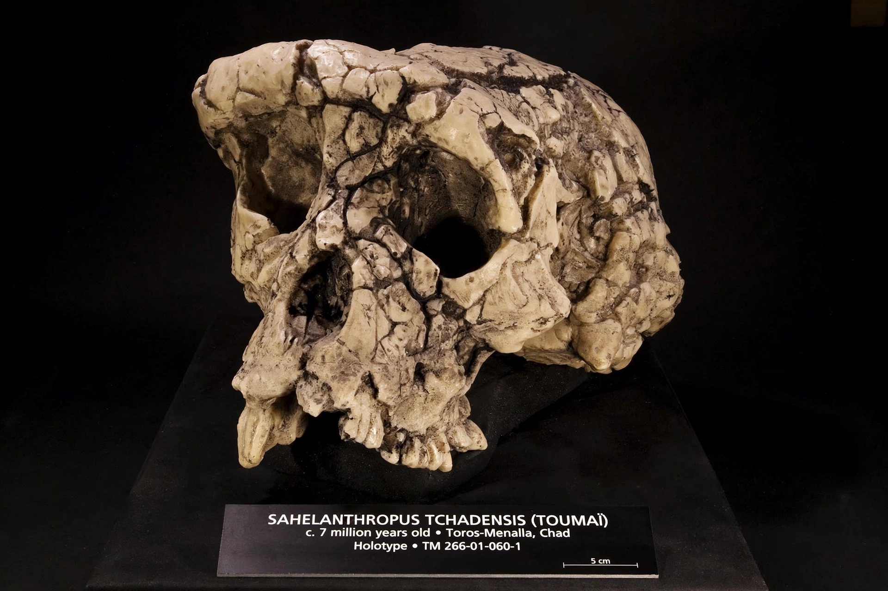

Sahelanthropus

Sahelanthropus
| Temporal range | Late Miocene, about 7 million years ago |
|---|---|
| Type species | Sahelanthropus tchadensis Brunet et al., 2002 |
| Known from | Toros-Menalla, Djurab Desert, Chad |
| Kingdom | Animalia |
| Family | Hominidae |
Sahelanthropus is a genus of extinct hominid known from the Late Miocene of Chad in north-central Africa. Its only known species, Sahelanthropus tchadensis, was announced in 2002 by a Franco-Chadian team led by Michel Brunet. The fossils date to roughly 7 million years ago, close to the estimated time of the divergence between the human and chimpanzee lineages, which makes Sahelanthropus a candidate for one of the earliest known members of the human lineage — though its precise position remains debated.
Discovery
The first fossil, a nearly complete but distorted cranium catalogued as TM 266-01-060-1, was found on 19 July 2001 in the Djurab Desert of northern Chad by Ahounta Djimdoumalbaye, a member of Brunet's Mission Paléoanthropologique Franco-Tchadienne. It was nicknamed "Toumaï", a Goran-language name meaning "hope of life", given to children born in the dry season. Additional material — jaw fragments, isolated teeth, and later a femur and ulnae — was recovered from the Toros-Menalla locality.
Description
The Toumaï cranium combines a small braincase, with an estimated cranial capacity of about 360–370 cm³ (similar to that of a chimpanzee), with a large, massive brow ridge and a relatively short, flat face. The canine teeth are small and show apical rather than honing wear, a pattern more typical of later hominins than of apes. Brunet's team argued that the foramen magnum is positioned toward the front of the skull base, suggesting habitual upright posture and bipedal locomotion.
Classification and debate
Whether Sahelanthropus lies on the human line after the split from chimpanzees, before that split, or on the chimpanzee or gorilla line has been contested since its announcement. A virtual reconstruction of the crushed cranium published in 2005 supported a hominin interpretation. Analyses of the associated femur have reached differing conclusions about bipedalism, with some studies arguing its curvature indicates climbing and quadrupedal habits. If its hominin status is confirmed, Sahelanthropus predates Orrorin by about a million years and extends the early hominin record far west of the East African Rift.
See also: Orrorin · Ardipithecus · Human evolution · Chad